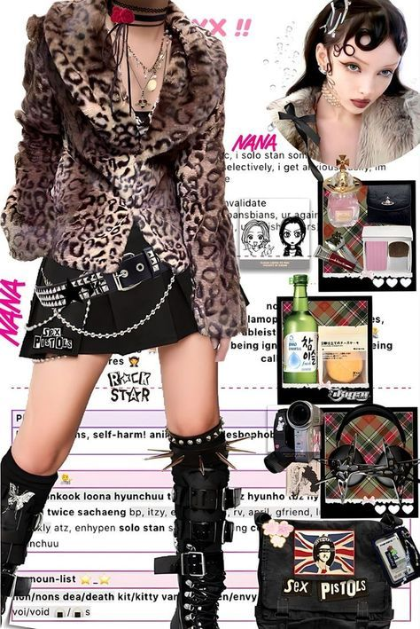
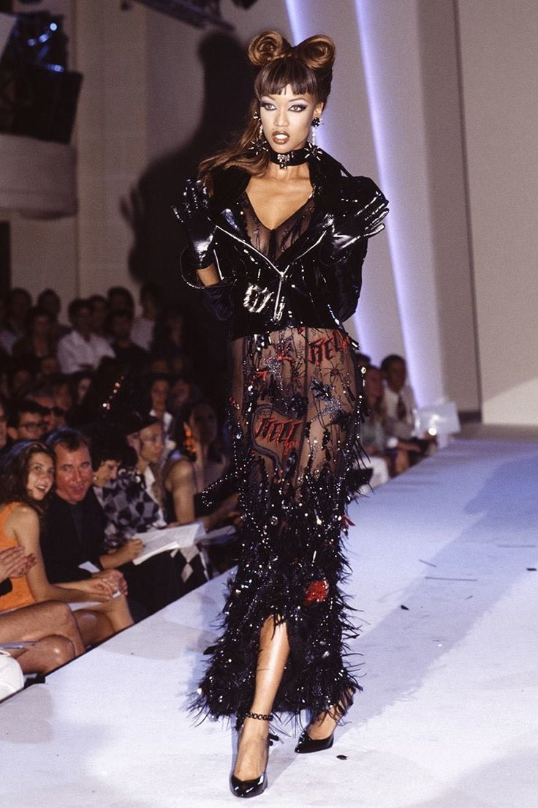
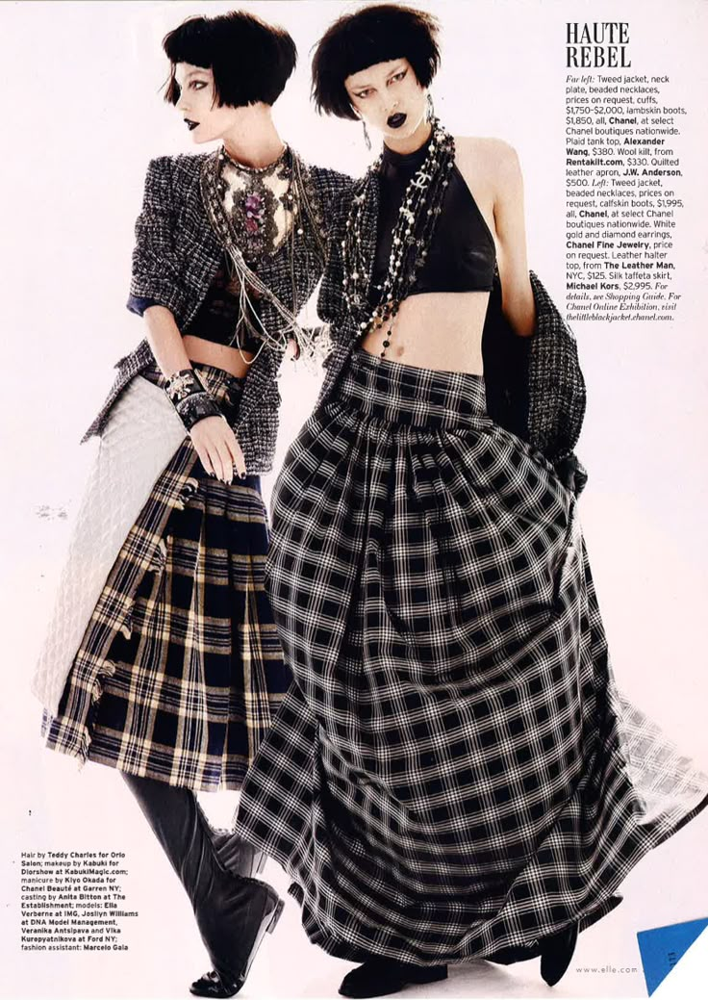

1. A Glimpse Into Fashion History
Fashion has existed for thousands of years, and each era has brought its own unique styles and meanings. In ancient Egypt, clothing was simple and functional, made from linen to keep people cool in the desert heat. Jewelry, makeup, and headdresses were used to show status and beauty.
During the Middle Ages in Europe, fashion became more elaborate. Nobles wore rich fabrics like velvet and silk, and clothing was a clear symbol of class. In the 17th and 18th centuries, European fashion reached extravagant levels with powdered wigs, corsets, and decorated dresses that took hours to put on.
The Industrial Revolution in the 19th century made clothing more accessible and led to the rise of ready-made garments. By the 20th century, fashion had become a true industry. Designers like Coco Chanel, Christian Dior, and Yves Saint Laurent redefined how women and men dressed, creating looks that are still influential today. Fashion movements like punk, hippie, and grunge became expressions of rebellion, freedom, or social change.
Fashion history teaches us how clothing can reflect politics, economics, and culture—and why what we wear has always mattered.

3. The Future of Fashion
Fashion is heading into an exciting future where creativity, technology, and sustainability go hand-in-hand. Innovations like 3D printing, AI-designed clothing, and virtual fashion shows are transforming how clothing is made, worn, and sold.
One of the biggest shifts is the move toward sustainable and ethical fashion. The fashion industry is one of the world’s biggest polluters, so more brands are now focusing on using recycled fabrics, reducing waste, and ensuring fair labor practices. Thrifting, upcycling, and renting clothes are also becoming more popular, especially among young people who care about the planet.
Digital fashion is another rising trend. People now buy virtual outfits for their avatars or even for social media photos. This opens up a whole new world of style—one that doesn’t need fabric or physical space, just imagination.
As fashion continues to evolve, one thing is certain: it will always be a reflection of who we are, what we value, and where we are headed.

Conclusio
Fashion is not just about trends or shopping—it's about history, identity, and the future. It connects generations and cultures, allowing us to speak without saying a word. Whether you're wearing a vintage jacket, designing your own clothes, or scrolling through the latest looks online, remember: fashion is an art, and you are the canvas.
